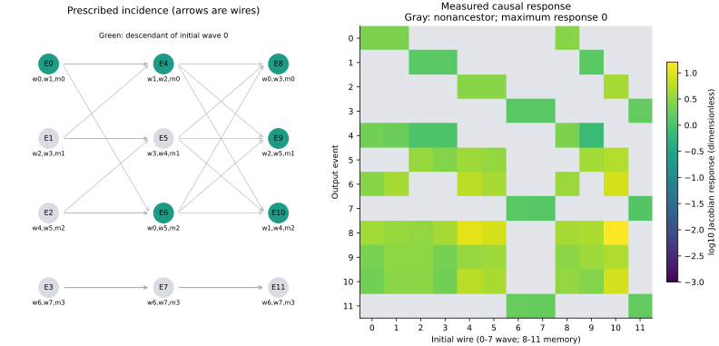
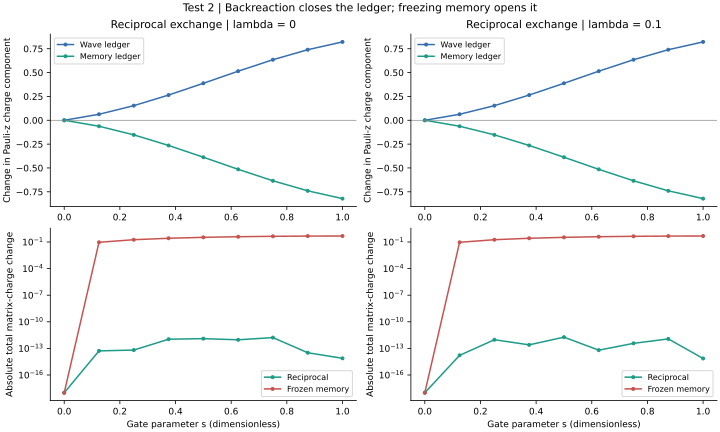
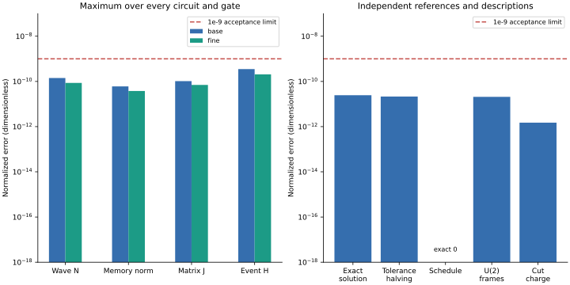
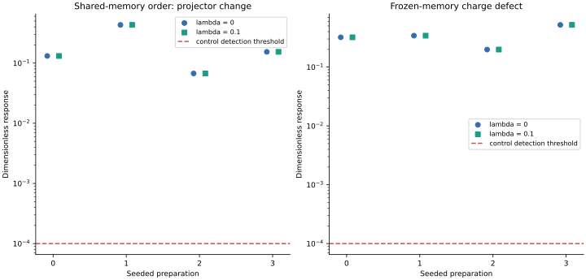

# Signal Space / GROSS Test 2 Scientific classification: pass. Technical execution: completed. Question: does the reciprocal event law preserve its declared ledger and causal scheduling? Method: four seeded preparations, lambda=0 and 0.1, kappa=pi/2; twelve acyclic gates per circuit. DOP853 numerical evolution is compared with half integration tolerances and a separate closed matrix-exponential solution. Variables: z1,z2 are complex wave spinors; w is unit memory; P=ww-dagger, d=z1-z2, N=|z1|^2+|z2|^2. The gate Hamiltonian is H=kappa |w-dagger d|^2 + lambda N^2/2. All quantities and the gate parameter s are dimensionless. The exact reference uses the constant Hermitian matrix S=dd-dagger+2ww-dagger. The protocol derives this solution and defines all normalization and error gates. Largest conservation residual: 3.50812e-10. Exact-reference difference: 2.45401e-11. Outside-ancestor Jacobian: 0. Run: run-81319816afe7cf8e. Analysis: analysis-0001-8c6b8920. Solver revision: 183b95feeae1cc1d4bd79ad3b3cd506f4952fba0. Config: e0caf90349d6a04a2f068137e4fabccccbabfae5429fcb8ff5ef16ff1e2e3f00. Error controls: within-gate norm, matrix-charge and Hamiltonian ledgers; complete-cut charge; half-tolerance integration; closed solution; central-difference step halving; local frames and valid topological rescheduling. Boundary sensitivity: no spatial box or mesh exists in this test. All circuit wires are retained, and the disconnected branch supplies a causal null. Changing incidence would change the apparatus, not refine it. Limits: causal support is not a metric. No clock, full mode spectrum, direction-dependent propagation or emergent spacetime has been evaluated. Event H is not asserted to be a globally conserved circuit energy. Next if accepted: Test 3 exact-router dispersion, with orthogonal, oblique and collinear triads, reversed order and full-zone inspection. Retain physical memory modes for Test 4 and directional comparisons for Test 11. causal-incidence Question: Do event outputs depend only on their causal ancestors? Reading: Green events descend from initial wave 0. Gray heatmap cells are nonancestors; their largest response is 0. Step-halving Jacobian difference is 4.24e-08. Significance: Tests participant-only causal dependence and includes a disconnected branch as a null. Memory-response and intervention checks separately verify nontrivial dynamics. Limitation: Incidence is supplied, not derived space. Jacobians cover one preparation, both couplings and physical memory tangents; no universal metric is inferred. matrix-balance Question: Does reciprocal memory exchange close the matrix-charge ledger? Reading: Wave and memory charge components exchange with opposite signs. The smallest frozen-memory relative charge defect across all cases is 0.198. Significance: Tests whether reciprocal memory dynamics closes the conserved matrix ledger; a prescribed frozen projector is an externally driven control. Limitation: Displayed trajectory is the first gate of preparation 0. The Pauli component is basis dependent; the full Frobenius residual is the acceptance observable. This is not mechanical recoil. numerical-audit Question: Do conservation and equivalent descriptions survive numerical refinement? Reading: Largest event conservation residual 3.51e-10; exact-solution difference 2.45e-11; tolerance-halving difference 2.14e-11. Compare with 1e-9. Significance: Checks integrated dynamics against a closed solution and tests description invariance under legal schedules and local frames. Limitation: Finite circuit and finite states. U(2) covariance is not Lorentz covariance; numerical tolerance refinement is not a continuum limit. Exact zeros use a display floor. order-controls Question: Can the audit distinguish physical interventions from rescheduling? Reading: Smallest shared-memory projector change 0.0673; smallest frozen-memory defect 0.198. Every preparation is compared with 1e-4. Significance: Distinguishes changes to physical event ordering and reciprocal feedback from permissible rescheduling of independent events. Limitation: Generic noncommutativity is expected, not guaranteed for all states. These fixed controls do not define new candidate models or test propagation.



